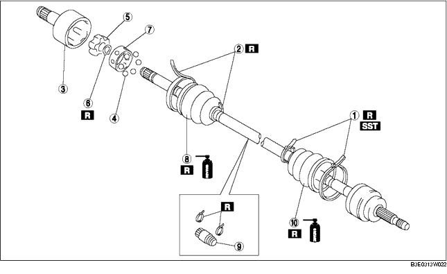

1. Teile wie in der Tabelle angegeben zerlegen.
2. Teile in umgekehrter Reihenfolge zusammenbauen.

.
|
1
|
Manschettenschelle (Radseite, Getriebeseite: kleiner Durchmesser)
|
|
2
|
Manschettenschelle (Getriebeseite großer Durchmesser)
|
|
3
|
Außenlaufring
|
|
4
|
Kugeln
|
|
5
|
Innerer Ring
(Siehe Zerlegungshinweis für inneren Ring.)
|
|
6
|
Sicherungsring
|
|
7
|
Kugelkäfig
|
|
8
|
Manschette
(Siehe Zusammenbauhinweis für Manschette.)
|
|
9
|
Schwingungsdämpfer
|
|
10
|
Antriebswelle und Kugelgelenk
|
1. Den Schwingungsdämpfer zur Radseite der Antriebswelle schieben.
2. Manschette und Kugelkäfig zur Radseite der Antriebswelle schieben.
3. Den Sicherungsring Spreizen und mit einem Kunststoffhammer gegen den Inneren Ring schlagen, um den Ring von der Antriebswelle zu entfernen.
1. Den Schwingungsdämpfer wie abgebildet montieren.
2. Eine neue Manschettenschelle am Schwingungsdämpfer anbringen.
1. Die radseitige Manschette mit dem angegebenen Fett auffüllen.
2. Darauf achten, dass die Zahnung der Welle noch mit Klebeband umwickelt ist. Die Manschette montieren.
3. Das Klebeband entfernen.
1. Den Sicherungsring Spreizen und mit einem Kunststoffhammer gegen den Inneren Ring schlagen, um den Ring an die Antriebswelle zu montieren.
2. Die Markierungen fluchten und die Kugeln sowie den Kugelkäfig in der abgebildeten Richtung auf den inneren Ring setzen.
1. Den Außenlaufring und die Manschette (Getriebeseite) mit dem vorgegebenen Fett füllen.
2. Den Außenlaufring an die Welle montieren.
3. Die Manschette anbringen.
4. Die Länge der Antriebswelle einstellen.
5. Die Spitze eines Schraubendrehers mit einem Tuch abdecken und die Manschette wie abgebildet anheben, um die Luft herauszulassen.
6. Sicherstellen, dass die Antriebswellenlänge dem Sollwert entspricht.